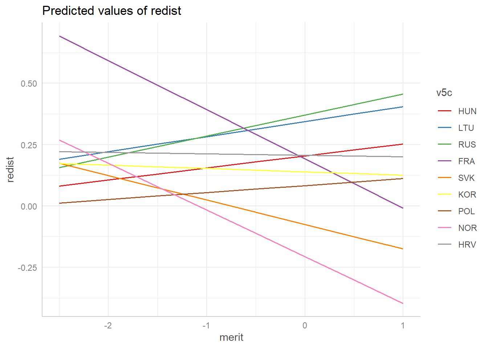
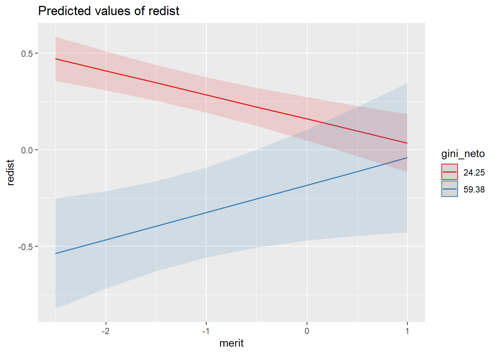
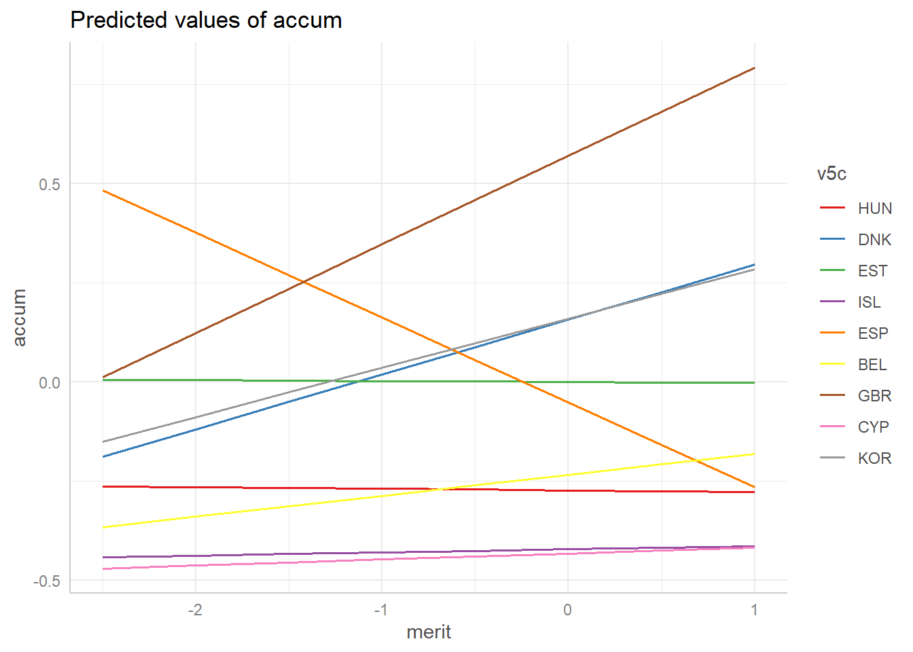
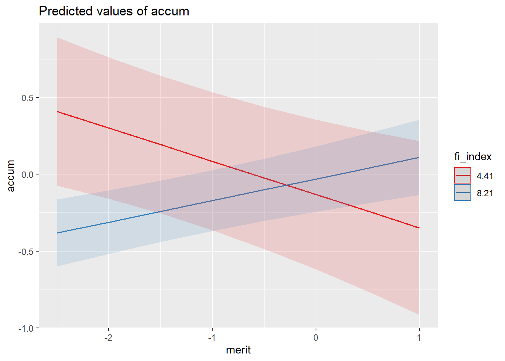

To be submitted in Social Indicators Research Ideas: meritocracy and redistributive To what extent perceptions of meritocracy affect redistributive preferences? The argument is that if individuals and groups in general consider that merit leads to career advancement and to move upwards in the status ladder, a possible consequence is that redistribution from the side of the cental agency as the state could be less supported as individuals are seen as responsible for their own fate. In this sense, perceptions of a well-functioning meritocracy would be linked to less redistributive preferences. Many ad-hoc decisions in operationalization and building instruments. Some of them represent different research interests and this is valid, but in many cases they are not well argued and are actually wrong. Of course this is probably not only the case for studying meritocratic beliefs, but this can be used both for researchers studying specifically this topic and jcastillov@uc.cl - jc-castillo.com 1 others that deal with measurement issues in international comparisons. Validity of measures in cross-national research … is not really “up to date”, mostly in sociology. Restricted to survey research, mostly comparative. Conceptual clarification: meritocratic pereceptions and meritocratic preferences. Beliefs, although mostly linked with normative principles, sometimes they are also used of perceptions (Reynolds and Xian, 2014), or even somentime “justice perceptions”, which is something ambiguous as justice, as a normative ideal, cannot really be perceived and mostly refer to perception of inequality (which is not necessarily consider unjust). One: definition of meritocracy and conceptual framework Two: measurement of meritocratic perceptions (merit and non-merit) 1.1 Measuring meritocratic perceptions and beliefs … maybe a different paper- Mau seminar presentation From a sociological perspective, the study of meritocracy can be framed in the area of distributive or social justice studies, which in broad terms empirical research on justice “deals solely with empirical phenomena, concentrating on the empirical validity of conceptions of justice for individuals’ attitudes and behavior and for the structure and processes of society or other forms of social aggregation” (Liebig and Sauer, 2016, p.37). Within this framework, beliefs about inequality through survey research is an area of studies that was first conceptualized as such by Kluegel and Smith (1981) and that has developed mainly through comparative studies as the ISJP and the ISSP.
Within this tradition meritocray does not appear as a main focus of study until the paper of Kunovich and Slomczynski (2007). In this research, the authors use ISSP 1992 data (14 countries) and analize the role of individual and country variables on meritocratic beliefs as the dependent variables. Meritocratic beliefs are operationalized through a sum index of 6 indicators. The first five com from a items’ battery listing a number of reasons about “How important should be in deciding pay…”: number of years spent in education, responsibility, how well person does the job, what is needed to support a family, and whether the person has children to support. The desicion of how to add these items to an index is based on “applying face validity criterion” (Kunovich and Slomczynski, 2007, p.652), whereby the first three are pointed as meritocratic when the answer is “essential” and for the other two when the answer is “not important at all” or “not very important”. Finally, another item is included in the index: “the government should provide jobs for everyone who wants one”, which is pointed as meritocratic when aswered strongly disagree and disagree. Two main weaknesses can be identified in the approach followed by the 2authors. First, the discretional decision regarding which response value should be pointed as promeritocratic, which opens a series of doubts regarding the replicability of the results if different decisions had been made. Secondly, the final score based on the items is not necessarily related to pro-meritocratic beliefs, which is a more serious weakness as it pertains to the validity of the results. And this is not only an opinion based on the description of the index. Rather, and somewhat surprising, the authors themselves defend the index as something that is not measuring the same latent construct: “the average correlation among items proved to be weak and all items share no more than 30 per cent of variance. In this situation, we decided to rely on a summative index. In choosing this strategy of index construction, we argue that support for meritocracy is not a latent variable causing particular responses to the questionnaire items. Rather it is a stance, which might be viewed as an aggregate of various opinions about the relationship between merit and reward” (Kunovich and Slomczynski, 2007, p.653-654).
Duru-Bellat and Tenret (2012) follow a similar rationale than the paper of Kunovich and Slomczynski (2007), but using ISSP 1999 with 26 countries (some missing due to lack of information for some variables). They distinguish between desired and perceived meritocracy. For desired meritocracy they use one of the item which was part of (Kunovich and Slomczynski, 2007), namely “how important should the number of years spent in education and training be in deciding how much money people ought to earn?”, whereas for perceived meritocracy they average two items: “Would you say that in your country, people are rewarded for their efforts?” and “… people are rewarded for their skills?” The main contribution here is the distinction between perceptions and beliefs (desires), but unfortunately the use of few indicators does not allow to test the measurement quality, and the results are not strictily comparable to the previous from Kunovich and Slomczynski (2007).
Reynolds and Xian (2014) compare 1987 and 2010 General Social Survey, which also has a version of the “get ahead” items battery, which ask about a series of reason about “…how important you think it is for getting ahead in life”. The main innovation from this paper is to distinguish meritocratic from non-meritocratic beliefs, under the assumption that beliefs in meritocracy and non-meritocracy are not the extremes of the same continuum. By meritocratic beliefs they consider the agreement with the statements related to good education, ambition and hard work, whereas the non-meritocratic beliefs are divided in two groups: friends and family (coming from a wealthy family, having well-educated parents, knowing the right people, having political connections) and discrimination (a persons’ race, religion, and being born a man or a woman). The authors build five scales based on these groups, one for each of the three groups, then a fourth adding all the non-meritocratic scales (scale two and three), and a fifth which is built upon a substraction of the non-meritocratic scales (fourth) from the meritocratic scale. The grouping of items is supported
3
by a principal component analysis, in which it is possible to identify three components. Drawbacks - principal component is not a factor analysis method, it is for reducing dimensions, which is not the same. - in scale four they are adding two non-meritocratic scale, but based on the factor analysis they actually support the idea that they are measuring two different things, then adding pears and apples. Probably the rationale behind this is that the two non-meritocratic scales build a second order factor, but they actually do not test this possibility. - The substractions of scales in scale fifth assumes that meritocracy and non-meritocracy are two poles of the same continuum, contrary to what the authors argue at the beginning and also not supported by the analysis of the scales. Actually, by using varimax rotation in the principal component analysis they restrict the correlations between the scales to be zero, being not possible to get at least some information about whether they are negatively correlated. - As one of the focus of the paper is to compare two years, the authors are making the strong assumption that the instrument is equivalent in both time-points, but this is also non tested. Without evidence in favor of equivalence, we cannot be sure whether the reported changes are due to “actual” changes or instrument variability (Davidov et al., 2014).
There are other papers that take simple measures (one or two indicators) of meritocracy and that do not deal with the issue of measurement, although this does not leave them out of the problem. For instance, Newman et al. (2015), contrary to Reynolds and Xian (2014), affirm that belief in meritocracy is the contrary of believing in non-meritocracy: " …belief in meritocracy should also involve rejection of the opposing idea that the achievement of wealth and success is largely determined by forces outside of the hands of the individual, such as good luck, inherited privileges and resources, political connections, and other forms of structural advantage or preferential treatment" (Reynolds and Xian, 2014, p.331). Consistently, they build several indexes in which non-meritocratic items are reverse coded. Besides, they use different items when comparing different waves of the date used (Pew Research datasets), an issue already mentioned by Solt et al. (2016) in the review and critique of this article. For contrasting the results, Solt et al. (2016) use two items referred to hard work as indicator of meritocratic beliefs in the US (Using the Religious Landscape Survey), something that is certainly more consistent than Newman et al. (2015), but that does not solve the problem of the definition and measurement of meritocracy and non-meritocratic distribution.
So far research in both preferences and to some extent on meritocracy have considered the homoeconomicus
Mediation hypothesis??
En este escenario, el mérito se instala como un criterio de distribución que legitima las desigualdades en distintos ámbitos basados en criterios como el esfuerzo y los talentos individuales (Hadjar, 2008), y que se reflejarían en distintas posiciones relacionadas principalmente en credenciales para alcanzar posociones en el mercado laboral. Y siendo un mercado, con pretensiones de autorregulación basado en mecanismos de competencia, oferta y demanda. Por su parte, el estado asume un rol en la redistribución principalmente con distintas formas de involucramiento en la gestión de riesgos que el mercado potencialmente genera a aquellos con limitaciones para acceder a este mercado, clásicamente el desempleo pero también la salud pensiones, así como también nivelando las condiciones de entrada a este mercado mediante la educación y en parte también con políticas de salud preventivas (dentro de las que pueden contarse programas de salud para el nacimiento y primeros años de vida). En este marco entonces podemos delimitar en términos generales dos esferas distintas de merecimiento: dentro y fuera del mercado del trabajo. Dentro del mercado del trabajo se supone 5 deberían operar los mecanismos meritocráticos para asignación de bienes y recompensas, mientras fuera operarían mecanismos de solidaridad/bienestar/reciprocidad social. Varios puntos a desarrollar aquí: - qué sucede cuando no operan los mecanismos de reciprocidad social para amortiguar riesgos? Aquí entonces tiene que compensar el segundo ámbito de normas de reciprocidad: la reciprocidad familiar. La familia privada familiar. La familiar entonces se puede definir como normas principalmente compensatorias. Esta compensación se puede producir ex post ante las deficiencias de la reciprocidad institucional (ej: desempleo, problemas de salud), así como también ex-ante, anticipando posibles deficiencias de la reciprocidad institucional e intentando entonces pre-compensar ganando ventajas comparativas mediante la acumulación de oportunidades que se transmiten a su descendencia en el momento presente (educación) como así también en el futuro (herencias). Cuando este mecanismo es predominante en una sociedad en terminos de reproducción y acumulación de oportunidades familiares se habla entonces de “parentocracia” (ver citas). La parentocracia entonces podría ser una consecuencia de la necesidad de compensación en la administración de los riesgos ante las faltas de la reciprocidad institucional. Por lo tanto, desde aquí una hipótesis empírica sería que en sociedades con un menor nivel de gasto público en seguridad social se mostrarían mayores preferencias por reciprocidad familiar. Reciprocidad y meritocracia Los principios meritocráticos como han sido planteados hasta ahora serían propios del mercado laboral. Sin embargo, esta división comienza a difuminarse en situaciones de privatización de la seguridad social. Por ejemplo, en caso de fondos privados de pensiones basados en mecanismos de capitalización individual, las lógicas de reciprocidad institucional conviven o eventualmente son reemplazadas por lógicas de meritocracia: el bienestar en la vejez ya no es asociado a una compensación institucional de riesgos individuales para quienes salen del mercado del trabajo, sino más bien vinculado a los méritos en el mismo mercado del trabajo. La marquetización (Mau) de la reciprocidad institucional entonces tiene como consecuencia que las normas de merecimiento en el mercado laboral se traspasan a la seguridad/bienestar social y los riesgos se administran de manera individual. Para que esto pueda funcionar sin afectar mayormente a la seguridad y bienestar, se tienen que cumplir dos supuestos a) condiciones de entrada al mercado laboral (igualdad de oportunidades de entrada) y b) capacidad de control de eventos azarosos que pueden mermar el desempeño en el mercado laboral (ej:problemas de salud). Ya que la retracción de la reciprocidad institucional llevará a activar normas compensatorias de reciprocidad familiar, se fomentará la acumulación de ventajas comparativas que van en dirección opuesta a la igualdad de oportunidades, que es lo 6 que precisamente plantea Young (1962) en “The rise of meritocracy”: el ingreso de mecanismos y normas meritocráticos en el mundo de la educación llevará cada vez un mayor distanciamiento de la clase “meritocratica” del resto de la sociedad. Y esto, entendiendo el carácter satírico de la novela, se refleja por ejemplo en citas como: (… acá cita de la presentación en ISUC) . En cuanto a la segunda, el control del azar conlleva en sí mismo una contradicción, y aunque si bien los intentos y avances en la “domesticación de la casualidad” son característicos de la modernidad (citar taming of chance), claramente quedan fuera de esto una serie de eventos que pueden limitar drásticamente la capacidad de desempeño en el mercado laboral y la consecuente compensación individual de riesgos. La privatización de la seguridad social por tanto necesariamente se traducirá en una mayor desigualdad económica. Por tanto, ante estas evidentes contradicciones, la pregunta que se abre es por qué en una sociedad democrática se optaría por privatización de seguridad social, no debería la mayoría de clase media oponerse a este tipo de reformas / intentar contrarrestarlas? Aquí se han dado una serie de argumentos que se vinculan con la literatura de preferencias redistributivas. El principal es el del median voter Meltzer and Richard (1981), donde el argumento es que en una sociedad con alta desigualdad la mayoría optaría por la redistribución, basado en una noción de autointerés del homo-economicus. Sin embargo, la literatura de preferencias establece también la noción de homosociologicus / homo-reciprocans, donde se enfatiza el rol de las normas de distribución que van más allá del autointerés, y que permitirían por ejemplo explicar por qué en algunas sociedades aún las mayorías preferirían formas de distribución que generan mayor desigualdad aunque eventualmente no los beneficien directamente (ej: POUM). En este paper se intentará explorar en qué medida la meritocracia se relaciona con preferencias por la redistribución y preferencias por la acumulación. ¿Existe alguna relación entre estas variables? Nota sobre foco en percepción de meritocracia en lugar de y creencias: primero, las creencias son más consensuales, menos varianza que las percepciones, por lo tanto no hay mucho que aclarar. Y la segunda, lamentablemente los datos no permiten operacionalizar adecuadamente las creencias, sobre todo en relación con percepción ya que no hay items “espejo” al respecto. Otras ideas: sobre la separación entre desempeño (esfuerzo más talento= desempeño), logro y recompensa (dinero / éxito). Mérito es lo que relaciona los logros con las recompensas, bajo la premisa general que esto funciona de manera directamente proporcional: el desempeño conduce a logros, y estos a su vez a recompensas. Por lo tanto, un ámbito central es la evaluación de los logros, y aquí se producen una serie de problemas que atentan a la noción ideal de proporcionalidad: 7 discriminación basada en características adscriptivas, efecto mateo, etc. Lutter (2013). Mau (2015). - Ahora bien, - educación: mezcla entre mecanismos meritocráticos y de reciprocidad social y familiar, es para otro paper. - suma cero entre ambos mundos? - efecto de la suerte, Robert Frank - idea: huevo o gallina? Es la desigualdad la que lleva a ciertas preferencias redistributivas, o es al revés? Casi toda la evidencia empírica va en la dirección de que es la desigualdad la que lleva a ajustar las preferencias, no al revés. Entonces, cómo se origina la desigualdad si no es un resultado de políticas implementadas en un entorno democrático? Una primera alternativa es entonces fuera de lo democrático, como sucede en dictaduras que se sumaron al consenso de washington (ej América Latina, Chile como caso paradigmático). Y segundo, en sociedades con tradición democrática una posibilidad /hipótesis son las consecuencias (insospechadas) del capitalismo financiero, que genera una acumulación desproporcionada con muy poca regulación desde lo público, traspasando incluso barreras nacionales (ej: inversión en paraisos fiscales). Todo esto para argumentar que la desigualdad es más bien el huevo que la gallina. Y los resultados de esto se pueden comprobar empíricamente en artículos como del de Schröder y también de Solt.
Los datos utilizados para este estudio provienen del módulo de desigualdad social de la encuesta internacional ISSP, donde se realizan preguntas relativas a creencias sobre la desigualdad y la redistribución. En particular, en este estudio se analizan los datos de la ola del 2004, en la cual participan países de distintos continentes. La encuesta se aplica en cada país por centros nacionales de investigación y, posteriormente, los datos son agregados por la organización. Todas las variables latentes y sociodemográficas que son utilizadas en el análisis provienen de esta base de datos. Para incorporar variables a nivel país, se utilizan las bases de datos Standardized World Income Inequality Database (SWIID) y Quality of Government Index (QOG). Por un lado, SWIID representa el mayor esfuerzo por recopilar información precisa de la desigualdad a partir de fuentes internacionales (eg. OCDE, CEDLAS, BM), esta base incorpora índices comparables de desigualdad y redistribución, como el Gini de desigualdad de ingresos disponibles, el GINI de mercado, y la redistribución neta y relativa para 198 países (Solt, 2020). Por otro lado, la base de datos QOG posee variables respecto a la calidad de la gobernanza de los países basados en la percepción de. sus ciudadanos (Charron, 2013).
La variable dependiente preferencias redistributivas es medida a partir de un conjunto de cinco ítems tipo likert que forman dos variables latentes. Se le pregunta al encuestado su grado de acuerdo con cada uno de los ítems, las categorías de respuesta van desde “Completely disagree” (1) to “Completely agree” (5). Tres indicadores se agrupan en el factor “preferencias redistributivas” y dos en el factor “preferencias por la mercantilización de servicios básicos”. Tal como se presenta en la Figura X el primer factor, preferencias redistributivas, incorpora indicadores relativos al rol que los ciudadanos esperan del Estado en tres aspectos: reducción de la desigualdad, estándares mínimos de dignidad a desempleados y aplicación de impuestos más altos a los más ricos. Indicadores de este tipo han sido usados en investigaciones similares, abordando las expectativas de los ciudadanos sobre el actuar del gobierno (10.1016/j.ejpoleco.2020.101880; 10.1007/s11211-020-00354-9). El segundo factor, preferencias por la mercantilización de servicios básicos, incorpora indicadores que refieren a la posibilidad de acceder a servicios de mejor calidad por medio del pago en dos ámbitos: la salud y la educación. Se testeó un análisis factorial confirmatorio de ambos factores, el cual, presentó un ajuste adecuado (). Las dos variables dependientes fueron producidas imputando valores predichos a cada caso a partir de las variables latentes, creando así dos variables continuas observadas.
Las variables independientes principales en el nivel individual refieren a creencias meritocráticas. Éstas han sido operacionalizadas en cuatro factores considerando las diferencias entre preferencias y percepciones (duru, profe), y entre creencias meritocráticas y creencias no meritocráticas. Las variables latentes estimadas son: preferencia meritocrática del pago (bmrt), preferencias no meritocráticas basadas en las necesidades (ned), percepción meritocrática (mrt) y percepción no meritocrática (unmer). Esta última variable es una variable latente de segundo orden estimada a partir de tres otras variables latentes relativas tres desigualdades adscritas: de origen socioeconómico, de género y de raza. Para medir estos cuatro factores hemos utilizado las variables del módulo de desigualdad social de la ISSP tradicionalmente utilizadas para medir estas creencias, la escala “get ahead” y la escala “ought to earn”. Adicionalmente, se agregan variables como el quintil de ingreso, el estatus subjetivo, si cursó estudios universitarios (o no), el género y edad. A nivel país se utilizaron las variables Gini de mercado y Gini neto de la base de datos SWIID y el índice de libertad para la acción económica (fi_index) de la base QOG. La variable GINI de mercado representa la desigualdad que es producida por la distribución de la renta dentro del mercado, sin considerar la disminución de la desigualdad generada por los impuestos y la redistribución, a diferencia del Gini neto, que sí incorpora dicha reducción (citar swiid). El índice de libertad para la acción económica fi_index busca representar la mercantilización de los servicios en general (citar fi_index).
En términos generales en este estudio se utilizaron como técnicas el análisis factorial confirmatorio y la regresión multinivel, por lo que la presentación de los resultados se organiza en dos secciones, cada una correspondiente a uno de estos tipos de análisis. En la primera sección se expone la evaluación de la validez de medida de las distintas variables latentes relacionadas con preferencias redistributivas y creencias meritocráticas. Se evaluó el ajuste del modelo teórico de medida presentado en el diagrama 1 a partir de los parámetros de Brown (2008), therefore we assessed model fit by jointly considering the comparative fit index and Tucker-Lewis Index (CFI and TLI; acceptable fit > 0.95), Root of the average squared residual approximation (RMSEA; acceptable fit < 0.08), Chi-square: (p-value; acceptable fit > 0.05, and Chi-square ratio:> 3). En la segunda sección se presenta la estimación de regresiones multinivel. En estos análisis se evalúa el efecto de variables individuales y a nivel país, la variabilidad de las pendientes entre países y la interacción entre variables individuales y nacionales. Los modelos a testear son los siguientes: [Formula redist] [Formula accum]
El software de análisis estadístico utilizado fue R (version 4.00) y la plataforma de edición Github. Para el análisis factorial confirmatorio utilizamos el paquete lavaan (version 0.6-3; Rosseel, 2020), mientras que para los análisis multinivel recurrimos al paquete lme4 (version 1.1-23; Bates et al. 2019)
# Data, variables & Methods ### Data The data used in the analysis corresponds to the ISSP Cumulative inequality provided by The Data Catalogue DBK (https://dbk.gesis.org/dbksearch). The cumulation covers all those ISSP member countries that participated in at least two “Social Inequality” modules (27 countries). The data release consists of two separate data files. The main file, ZA5890 “ISSP Cumulation Social Inequality I-IV”, contains only cumulated variables. That means it includes: - topic-related variables of the master questionnaires, called module variables, which appear in at least two “Social Inequality” modules and - background variables, mostly covering demographics, which appear in at least two - Las variables de percepción / justificación de salarios no aparecen en el cumulative (por razones de cambio en los valores de monedas (?!)). De todas maneras se podrían merge desde los datos complementarios (aka add-on) 9
# Variables
library(texreg)
library(sjPlot)
library(ggeffects)
#pref
load(file = "output/results/results_1_redist_macro.rdata")
load(file = "output/results/results_2_redist_macro_bv.rdata")
load(file = "output/results/results_3_redist_macro_bvi.rdata")
#accum
load("output/results/results_1_accum_macro.rdata")
load("output/results/results_2_accum_macro_bv.rdata")
load("output/results/results_3_accum_macro_bvi.rdata")htmlreg(list(results_1_redist_macro, results_2_redist_macro_bv, results_3_redist_macro_bvi)) | Model 1 | Model 2 | Model 3 | |
|---|---|---|---|
| (Intercept) | 0.93 | 1.18** | 0.86* |
| (0.48) | (0.37) | (0.39) | |
| univ | -0.08*** | -0.08*** | -0.08*** |
| (0.01) | (0.01) | (0.01) | |
| as.factor(quintile_miss)2 | -0.03*** | -0.03** | -0.03** |
| (0.01) | (0.01) | (0.01) | |
| as.factor(quintile_miss)3 | -0.06*** | -0.06*** | -0.06*** |
| (0.01) | (0.01) | (0.01) | |
| as.factor(quintile_miss)4 | -0.10*** | -0.10*** | -0.10*** |
| (0.01) | (0.01) | (0.01) | |
| as.factor(quintile_miss)5 | -0.18*** | -0.18*** | -0.18*** |
| (0.01) | (0.01) | (0.01) | |
| as.factor(quintile_miss)6 | -0.12*** | -0.12*** | -0.12*** |
| (0.01) | (0.01) | (0.01) | |
| sstatus | -0.00*** | -0.00*** | -0.00*** |
| (0.00) | (0.00) | (0.00) | |
| movstatus | 0.01*** | 0.01*** | 0.01*** |
| (0.00) | (0.00) | (0.00) | |
| sex | 0.04*** | 0.04*** | 0.04*** |
| (0.01) | (0.01) | (0.01) | |
| age | 0.00*** | 0.00*** | 0.00*** |
| (0.00) | (0.00) | (0.00) | |
| merit | -0.05*** | -0.06** | -0.33*** |
| (0.01) | (0.02) | (0.09) | |
| bmerit | 0.04*** | 0.04*** | 0.04*** |
| (0.01) | (0.01) | (0.01) | |
| unmerit | 0.07*** | 0.06*** | 0.06*** |
| (0.01) | (0.01) | (0.01) | |
| need | 0.14*** | 0.14*** | 0.14*** |
| (0.00) | (0.00) | (0.00) | |
| gini_neto | -0.01 | -0.02*** | -0.01 |
| (0.01) | (0.00) | (0.01) | |
| fi_index | -0.09 | -0.08 | -0.08 |
| (0.05) | (0.04) | (0.04) | |
| merit:gini_neto | 0.01** | ||
| (0.00) | |||
| AIC | 91205.18 | 90780.29 | 90773.70 |
| BIC | 91373.74 | 90966.60 | 90968.88 |
| Log Likelihood | -45583.59 | -45369.14 | -45364.85 |
| Num. obs. | 52681 | 52681 | 52681 |
| Num. groups: v5c | 40 | 40 | 40 |
| Var: v5c (Intercept) | 0.05 | 0.06 | 0.05 |
| Var: Residual | 0.33 | 0.33 | 0.33 |
| Var: v5c merit | 0.02 | 0.01 | |
| Cov: v5c (Intercept) merit | 0.02 | 0.02 | |
| p < 0.001; p < 0.01; p < 0.05 | |||
El cambio de cada modelo al anterior es significativamente mejor. Lo que nos indica la existencia de una relacion con pendiente aleatoria entre paises, la cual es explicada por la desigualdad.
graf2=ggpredict(results_2_redist_macro_bv, terms = c("merit","v5c [sample = 9]"), type="re")
plot(graf2)
La pendiente cambia de sentido entre paises.
sjPlot::plot_model(results_3_redist_macro_bvi, type = c("int")) 
htmlreg(list(results_1_accum_macro, results_2_accum_macro_bv, results_3_accum_macro_bvi))| Model 1 | Model 2 | Model 3 | |
|---|---|---|---|
| (Intercept) | -1.28 | -0.83 | -1.68* |
| (0.79) | (0.71) | (0.75) | |
| univ | 0.10*** | 0.10*** | 0.09*** |
| (0.01) | (0.01) | (0.01) | |
| as.factor(quintile_miss)2 | -0.00 | -0.00 | -0.00 |
| (0.01) | (0.01) | (0.01) | |
| as.factor(quintile_miss)3 | 0.03* | 0.03* | 0.03* |
| (0.01) | (0.01) | (0.01) | |
| as.factor(quintile_miss)4 | 0.09*** | 0.09*** | 0.09*** |
| (0.01) | (0.01) | (0.01) | |
| as.factor(quintile_miss)5 | 0.17*** | 0.17*** | 0.17*** |
| (0.02) | (0.02) | (0.02) | |
| as.factor(quintile_miss)6 | 0.08*** | 0.08*** | 0.08*** |
| (0.02) | (0.02) | (0.02) | |
| sstatus | 0.00*** | 0.00*** | 0.00*** |
| (0.00) | (0.00) | (0.00) | |
| movstatus | -0.02*** | -0.02*** | -0.02*** |
| (0.00) | (0.00) | (0.00) | |
| sex | -0.10*** | -0.10*** | -0.10*** |
| (0.01) | (0.01) | (0.01) | |
| age | -0.00*** | -0.00*** | -0.00*** |
| (0.00) | (0.00) | (0.00) | |
| merit | 0.04** | 0.04 | -0.63** |
| (0.01) | (0.02) | (0.19) | |
| bmerit | -0.04*** | -0.04*** | -0.04*** |
| (0.01) | (0.01) | (0.01) | |
| unmerit | 0.04*** | 0.04*** | 0.04*** |
| (0.01) | (0.01) | (0.01) | |
| need | -0.10*** | -0.10*** | -0.10*** |
| (0.01) | (0.01) | (0.01) | |
| gini_neto | 0.04*** | 0.05*** | 0.05*** |
| (0.01) | (0.01) | (0.01) | |
| fi_index | -0.00 | -0.09 | 0.03 |
| (0.09) | (0.08) | (0.09) | |
| merit:fi_index | 0.09*** | ||
| (0.03) | |||
| AIC | 146869.88 | 146754.96 | 146746.18 |
| BIC | 147038.45 | 146941.27 | 146941.36 |
| Log Likelihood | -73415.94 | -73356.48 | -73351.09 |
| Num. obs. | 52681 | 52681 | 52681 |
| Num. groups: v5c | 40 | 40 | 40 |
| Var: v5c (Intercept) | 0.14 | 0.14 | 0.13 |
| Var: Residual | 0.95 | 0.94 | 0.94 |
| Var: v5c merit | 0.01 | 0.01 | |
| Cov: v5c (Intercept) merit | 0.02 | 0.02 | |
| p < 0.001; p < 0.01; p < 0.05 | |||
graf2=ggpredict(results_2_accum_macro_bv, terms = c("merit","v5c [sample = 9]"), type="re")
plot(graf2)
sjPlot::plot_model(results_3_accum_macro_bvi, type = c("int")) 
reduce income differences 4 waves - Should people with high incomes pay more taxes, 4 waves - References
Davidov, E., Meuleman, B., Cieciuch, J., Schmidt, P., and Billiet, J. (2014). Measurement Equivalence in Cross-National Research. Annual Review of Sociology, 40(1):55–75.
Duru-Bellat, M. and Tenret, E. (2012). Who’s for Meritocracy? Individual and Contextual Variations in the Faith. Comparative Education Review, 56(2):223–247.
Fleischacker, S. (2004). A Short History of Distributive Justice. Harvard University Press, Cambridge, MA.
Hadjar, A. (2008). Meritokratie Als Legitimationsprinzip. VS Verlag, Wiesbaden.
Kluegel, J. and Smith, E. (1981). Beliefs About Stratification. Annual Review of Sociology, 7:29–56.
Kunovich, S. and Slomczynski, K. M. (2007). Systems of Distribution and a Sense of Equity: A Multilevel Analysis of Meritocratic Attitudes in Post-industrial Societies. European Sociological Review, 23(5):649–663.
Liebig, S. and Sauer, C. (2016). Sociology of Justice. In Sabbagh, C. and Schmitt, M., editors,
Handbook of Social Justice Theory and Research, pages 37–59. Springer, New York.
Lutter, M. (2013). Strukturen ungleichen Erfolgs. Winner-take-all-Konzentrationen und ihre sozialen Entstehungskontexte auf flexiblen Arbeitsmärkten. KZfSS Kölner Zeitschrift für Soziologie und Sozialpsychologie, 65(4):597–622.
Mau, S. (2015). Inequality, Marketization and the Majority Class: Why Did the European Middle
Classes Accept Neo-Liberalism? Palgrave provocations. Palgrave Macmillan, Houndmills, Basingstoke, Hampshire.
Meltzer, A. and Richard, S. (1981). A Rational Theory of the Size of Government. The Journal of Political Economy, 89(5):914. 10
Newman, B. J., Johnston, C. D., and Lown, P. L. (2015). False Consciousness or Class Awareness? Local Income Inequality, Personal Economic Position, and Belief in American Meritocracy. American Journal of Political Science, 59(2):326–340.
Reynolds, J. and Xian, H. (2014). Perceptions of meritocracy in the land of opportunity. Research in Social Stratification and Mobility, 36:121–137.
Solt, F., Hu, Y., Hudson, K., Song, J., and Yu, D. E. (2016). Economic inequality and belief in meritocracy in the United States. Research & Politics, 3(4):2053168016672101. Young, M. (1962). The Rise of the Meritocracy. Penguin Books, Baltimore. 11